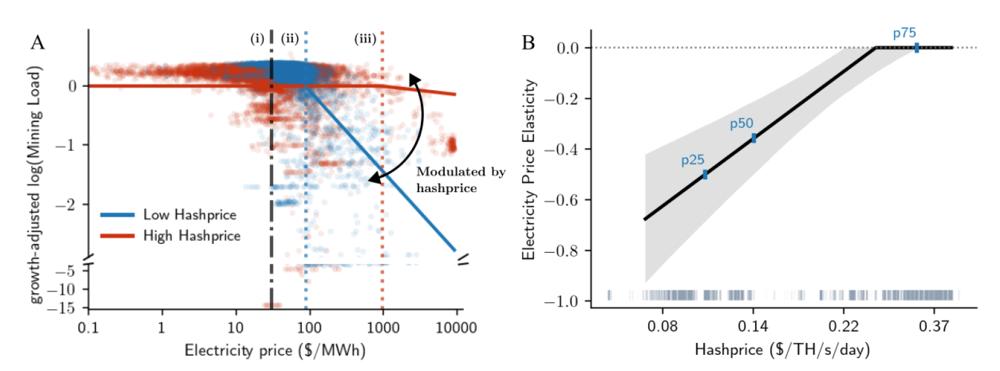
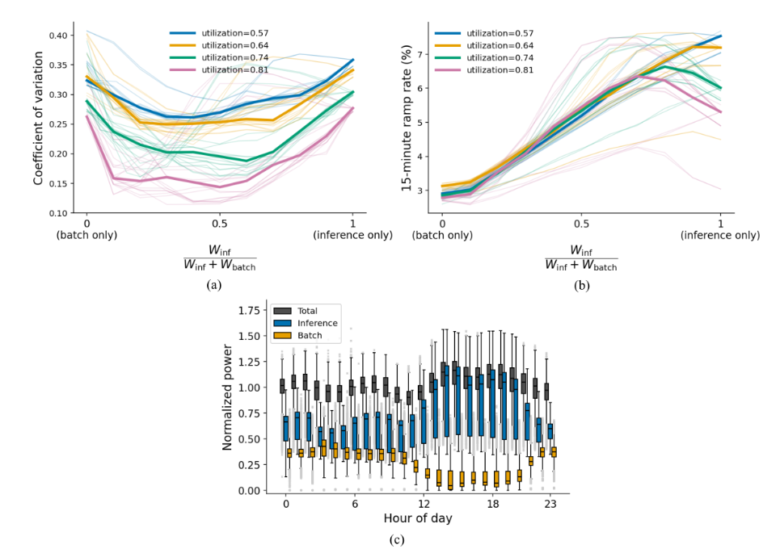
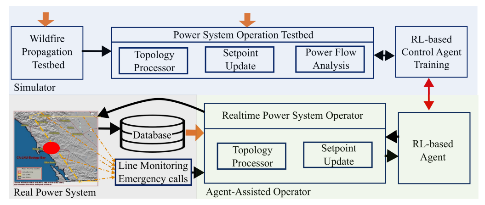

Note: I am on the job market and open to research roles, collaborations, and conversations about interesting problems.
Dr. Subir Majumder is a power and energy systems researcher studying how emerging large electricity loads, including Bitcoin mining and AI data centers, interact with the electric power grid. His research moves large-load modeling beyond grid-boundary abstractions by representing the internal economic and operational states that produce demand variability and flexibility. His work aims to combine power grid modeling, electricity markets, energy economics, and AI/data-driven methods to inform grid operations, planning, and resilience.
Dr. Majumder received his Ph.D. in Electrical Power Engineering under a cotutelle agreement between the Indian Institute of Technology Bombay, India, and the University of Wollongong, Australia (with Prof. S. A. Khaparde and Prof. A. P. Agalgaonkar). He also received an M.Tech. in Energy Systems Engineering from the Indian Institute of Technology Bombay and a B.Tech. in Electrical Engineering from Kalyani Government Engineering College. He has held research appointments at Washington State University and West Virginia University (with Prof. Anurag Srivastava), and later at Texas A&M University and Harvard University (with Prof. Le Xie). Dr. Majumder received the POSOCO Power System Award in the doctoral category in 2020. He was recently selected as a Tocqueville Fellow at the Mercatus Center at George Mason University to explore the intersection of Bitcoin, political economy, and philosophy.
Dr. Majumder received his Ph.D. in Electrical Power Engineering under a cotutelle agreement between the Indian Institute of Technology Bombay, India, and the University of Wollongong, Australia (with Prof. S. A. Khaparde and Prof. A. P. Agalgaonkar). He also received an M.Tech. in Energy Systems Engineering from the Indian Institute of Technology Bombay and a B.Tech. in Electrical Engineering from Kalyani Government Engineering College. He has held research appointments at Washington State University and West Virginia University (with Prof. Anurag Srivastava), and later at Texas A&M University and Harvard University (with Prof. Le Xie). Dr. Majumder received the POSOCO Power System Award in the doctoral category in 2020. He was recently selected as a Tocqueville Fellow at the Mercatus Center at George Mason University to explore the intersection of Bitcoin, political economy, and philosophy.
Research Highlights
Highlight 1: Hashprice moderates Bitcoin-mining flexibility

Large Bitcoin-mining loads can reduce electricity consumption when power-sector costs rise, but their flexibility is not fixed. Using coincident-peak pricing in Texas as a natural experiment, we identify the short-run causal response of mining load to electricity-sector costs. This work shows that mining demand response is moderated by hashprice: when mining revenues are high, miners become less responsive to wholesale prices and coincident-peak incentives.
Hashprice is mining revenue per unit of computational power per unit of time.
This aggregate response is consistent with mining loads being composed of heterogeneous devices operated around distinct breakeven points. This mechanism is most visible in the response to wholesale prices: at a given hashprice, mining load remains largely online at low electricity prices but begins to fall once prices rise sufficiently. Higher hashprice shifts this implied curtailment threshold to higher wholesale prices, consistent with stronger revenue conditions allowing marginal devices to remain profitable at higher electricity costs.
This aggregate response is consistent with mining loads being composed of heterogeneous devices operated around distinct breakeven points. This mechanism is most visible in the response to wholesale prices: at a given hashprice, mining load remains largely online at low electricity prices but begins to fall once prices rise sufficiently. Higher hashprice shifts this implied curtailment threshold to higher wholesale prices, consistent with stronger revenue conditions allowing marginal devices to remain profitable at higher electricity costs.
Highlight 2: AI data centers are dynamic electricity loads shaped by workload composition

The grid-facing power dynamics of AI data centers depend on how internal workloads move through shared computing infrastructure. In shared-GPU systems, the composition of batch and inference workloads decouples aggregate power variability from short-horizon ramping. Using a trace-calibrated framework, we show the following: at intermediate workload mixes, queued batch jobs fill capacity left idle by fluctuating inference demand, reducing aggregate power variability; however, short-horizon ramping remains elevated because inference-side fluctuations propagate more directly into realized power. At the aggregated level we find, as the inference share rises, variability becomes U-shaped, whereas ramping becomes hump-shaped, particularly under higher loading condition.
Highlight 3: Reinforcement learning-based algorithms can improve power grid operations during wildfires

Power-grid operators need fast decision support during evolving wildfires, when transmission-line switching, load shedding, and generator redispatch must be coordinated under stress. This work develops a hybrid proactive reinforcement-learning controller in which learning provides anticipatory generator-setpoint guidance, while a per-step constrained optimization layer enforces feasible real-time dispatch. This feasible-by-construction design reduces load loss relative to reactive/myopic operation and maintains runtimes compatible with real-time decision support. The results show that learning-based proactive control can support timely resilience-driven grid operation when conventional multiperiod optimization is computationally difficult to deploy in real time.
Featured Publications
Policy briefs
R. Mural, D. Pherwani, C. Gupta, Y. Yu, A. Takahashi, D. Kim,
S. Majumder, H. Lee, M. Yu, and L. Xie.
"AI, data centers, and the U.S. electric grid: A watershed moment."
Belfer Center for Science and International Affairs, Harvard Kennedy School; Power and AI Initiative, Harvard SEAS, 2026.
"AI, data centers, and the U.S. electric grid: A watershed moment."
Belfer Center for Science and International Affairs, Harvard Kennedy School; Power and AI Initiative, Harvard SEAS, 2026.
Journal publications
I. Aravena, C.-C. Sun, R. Shi,
S. Majumder, W. Yan, J.-Y. Joo, L. Xie, and J. Wang.
"Open power system datasets and open simulation engines: A survey toward machine learning applications."
IEEE Open Access Journal of Power and Energy, vol. 12, pp. 353–365, 2025.
"Open power system datasets and open simulation engines: A survey toward machine learning applications."
IEEE Open Access Journal of Power and Energy, vol. 12, pp. 353–365, 2025.
S. Majumder*,
L. Dong*, F. Doudi*, Y. Cai*, C. Tian, D. Kalathil, K. Ding, A. A. Thatte, and L. Xie.
"Exploring the capabilities and limitations of large language models in the electric energy sector."
Joule, vol. 8, no. 6, pp. 1544–1549, 2024. (*= Equal contribution.)
"Exploring the capabilities and limitations of large language models in the electric energy sector."
Joule, vol. 8, no. 6, pp. 1544–1549, 2024. (*= Equal contribution.)
L. Xie,
S. Majumder, T. Huang, Q. Zhang, P. Chang, D. J. Hill, and M. Shahidehpour.
"The role of electric grid research in addressing climate change."
Nature Climate Change, vol. 14, no. 9, pp. 909–915, 2024.
"The role of electric grid research in addressing climate change."
Nature Climate Change, vol. 14, no. 9, pp. 909–915, 2024.
S. U. Kadir,
S. Majumder, A. K. Srivastava, A. Chhokra, A. Dubey, H. Neema, and A. Laszka.
"Reinforcement learning based proactive control for enabling power grid resilience to wildfire."
IEEE Transactions on Industrial Informatics, vol. 20, no. 1, pp. 795–805, 2024.
"Reinforcement learning based proactive control for enabling power grid resilience to wildfire."
IEEE Transactions on Industrial Informatics, vol. 20, no. 1, pp. 795–805, 2024.
S. Majumder, A. P. Agalgaonkar, S. A. Khaparde, P. P. Ciufo, S. Perera, and S. V. Kulkarni.
"Allocation of common-pool resources in an unmonitored open system."
IEEE Transactions on Power Systems, vol. 34, no. 5, pp. 3912–3920, 2019.
"Allocation of common-pool resources in an unmonitored open system."
IEEE Transactions on Power Systems, vol. 34, no. 5, pp. 3912–3920, 2019.
S. Majumder, S. A. Khaparde, A. P. Agalgaonkar, P. P. Ciufo, S. Perera, and S. V. Kulkarni.
"DFT-based sizing of battery storage devices to determine day-ahead minimum variability injection dispatch with renewable energy resources."
IEEE Transactions on Smart Grid, vol. 10, no. 1, pp. 626–638, 2019.
"DFT-based sizing of battery storage devices to determine day-ahead minimum variability injection dispatch with renewable energy resources."
IEEE Transactions on Smart Grid, vol. 10, no. 1, pp. 626–638, 2019.
S. Majumder, R. M. Shereef, and S. A. Khaparde.
"Two-stage algorithm for efficient transmission expansion planning with renewable energy resources."
IET Renewable Power Generation, vol. 11, no. 3, pp. 320–329, 2017.
"Two-stage algorithm for efficient transmission expansion planning with renewable energy resources."
IET Renewable Power Generation, vol. 11, no. 3, pp. 320–329, 2017.
Fellowships and Awards
Tocqueville Fellowship; awarded by Mercatus Center at George Mason University. Theme: Exploring the intersection of Bitcoin, political economy, and philosophy. (2026)
POSOCO Power System Award; awarded by POSOCO, now Grid Controller of India Limited. (2020)
University Postgraduate Award and Institute Postgraduate Tuition Award; awarded by University of Wollongong, Australia. (2016)
Media and Research Coverage
Harvard SEAS News, "Bringing GPT to the grid: The promise and limitations of large-language models in the energy sector." (Jun. 2024)
Texas A&M Engineering News, "Large language models may revolutionize the electric energy sector." (Jun. 2024)
News
[Presently]
Working on a positioning paper, "Internal states define the next generation of large-load modeling," which argues that emerging large loads should be modeled through the internal economic and operational states that produce demand variability and flexibility.
[06/2026]
New working paper: "Hashprice moderates the electricity demand response of Bitcoin miners."
[04/2026]
New working paper: "Workload composition smooths aggregate power demand while sustaining short-horizon ramps in AI data centers."
[03/2026]
Poster presentation, "Queueing dynamics shape power demand in AI data centers," IEEE PES Energy and Policy Forum.
[02/2026]
Selected as a Tocqueville Fellow at the Mercatus Center at George Mason University, exploring the intersection of Bitcoin, political economy, and philosophy.
[07/2025]
Gave an invited talk, "Modeling the power grid impact of AI data centers," at Massachusetts Institute of Technology.
[03/2025]
Gave an invited talk, "Necessity of system-aware grid-edge operations in the power grids," for Pran Foundation.
[03/2025]
Served as a panelist on "The dual edge of technology: Equity and sustainability in AI usage," at Harvard University IT.
[06/2024]
Research on large language models for the electric energy sector was featured by Harvard SEAS News and Texas A&M Engineering News.